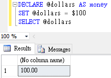
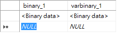
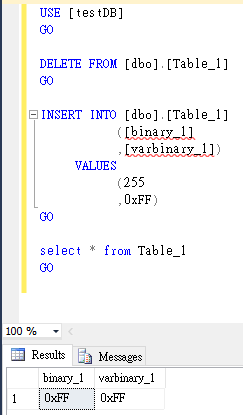
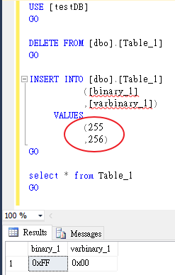
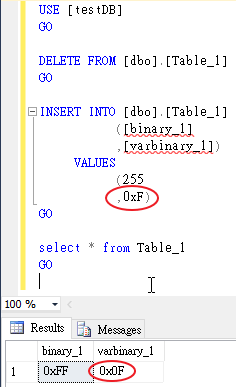
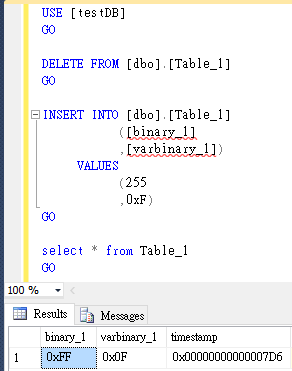
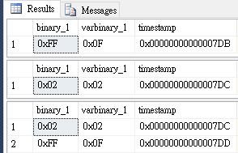

一、整數型態
| 資料類型 | 範圍 | 位元數長度 |
| bit | 0 或 1 或 Null | 1 Bit |
| tinyint | 0 至 255 | 1 Byte |
| smallint | (-215) -32768 ~ (215-1) 32767 | 2 Bytes |
| int | (-231) -2,147,483,648 ~ (二十億多，231-1) 2,147,483,647 | 4 Bytes |
| bigint | (-263) -9,223,372,036,854,775,808 ~ (263-1) 9,223,372,036,854,775,807 | 8 Bytes |
int、bigint、smallint 和 tinyint (Transact-SQL)
二、固定有效位數和小數位數的數值資料類型
| 資料型態 | 範圍 | 有效位數 | 位元數長度 |
| numeric(p,s) 或 decimal(p,s) | -1038+1 ~ 1038-1 | 1~9 | 5 Bytes |
| 10~19 | 9 Bytes | ||
| 20~28 | 13 Bytes | ||
| 29~38 | 17 Bytes |
decimal(p,s)的格式，p代表精確度(Precision，全部的位數)，s代表小數位數(Scale，小數點右邊的位數)，
p一定會大於等於s。
在新版SQL SERVER建議使用decimal取代numeric資料類型。
decimal 和 numeric (Transact-SQL)
三、貨幣型態
| 資料類型 | 範圍 | 位元長度 |
| money | -922,337,203,685,477.5808~992,337,203,685,477.5807 | 8 Byte |
| smallmoney | -214,748.3648~214,748.3647(二十萬多) | 4 Byte |
1、money與smallmoney皆可精確到小數點下4位數。
2、對於money或smallmoney資料類型於T-SQL指令可以帶貨幣符號，
而實際只會儲存數值在資料庫裡，並不會儲存貨幣符號。
DECLARE @dollars AS money SET @dollars = $100 SELECT @dollars

money 和 smallmoney (Transact-SQL)
四、近似數值
| 資料類型 | 範圍 | 位元長度 |
| float(n) | - 1.79E+308 到 -2.23E-308、0 及 2.23E-308 到 1.79E+308 | 當n=25~53時，8 Byte |
| real(n) | - 3.40E + 38 到 -1.18E - 38、0 及 1.18E - 38 到 3.40E + 38 | 當n=1~24時，4 Byte |
目前在SQL SERVER設定float與real似乎無法指定n值。
五、日期和時間
| 資料類型 | 格式 | 範圍 | 精確度 | 位元數長度 |
| time(n) | hh:mm:ss[.nnnnnnn] | 00:00:00.0000000~23:59:59.9999999 | 10-0~10-7秒(n=0~7) | 3~5 |
| date | YYYY-MM-DD | 0001-01-01~9999-12-31 | 1 天 | 3 |
| smalldatetime | YYYY-MM-DD hh:mm:ss | 1900-01-01 00:00:00~2079-06-06 23:59:00 | 1 分 | 4 |
| datetime | YYYY-MM-DD hh:mm:ss[.nnn] | 1753-01-01 00:00:00.000~9999-12-31 23:59:59.997 | 0~10-3秒 | 8 |
| datetime2(n) | YYYY-MM-DD hh:mm:ss[.nnnnnnn] | 0001-01-01 00:00:00.0000000~9999-12-31 23:59:59.9999999 | 10-0~10-7秒(n=0~7) | 6~8 |
| datetimeoffset(n) | YYYY-MM-DD hh:mm:ss[.nnnnnnn][+|-]hh:mm | 0001-01-01 00:00:00.0000000~9999-12-31 23:59:59.9999999(以UTC為單位) | 10-0~10-7秒(n=0~7) | 8~10 |
例如：SELECT CONVERT(date,'2016-01-01')或SELECT CONVERT(date,'20160101')
六、字元字串
| 資料類型 | 範圍 | 位元數長度 |
| char(n) | n=1~8000(最大為8000個字元或4000個中文字) | 8000Bytes |
| varchar(n) | n=1~8000(最大為8000個字元或4000個中文字) | 可變長度至多8000Bytes |
| varchar(max) | max是保留字，可用範圍1~231-1個可變長度之字元 | 可變長度至多231-1Bytes |
| text | 最大長度是231-1(2,147,483,647)個字元 | 可變長度至多2GB |
1、例如：char(1)固定佔1byte空間，可放入一個字元，但不能放一個中文字。
2、之後text將會由varchar(max)來取代。
char and varchar (Transact-SQL)
七、Unicode字元字串
| 資料類型 | 範圍 | 位元數長度 |
| nchar(n) | n=1~4000個固定長度之字元 | 8000Bytes |
| nvarchar(n) | n=1~4000個可變長度之字元 | 可變長度至多8000Bytes |
| nvarchar(max) | max是保留字，可用範圍1~231-1個可變長度之字元 | 可變長度，一個字元佔2 Bytes，總長度與實際字元佔位元數相同 |
| ntext | 最大長度是231-1(2,147,483,647)個字元 | 變動長度至多為輸入字元的兩倍的位元組 |
1、例如：nchar(1)固定佔2byte空間，可放入一個字元，也可放入一個中文字。
2、之後ntext將會由nvarchar(max)來取代。
nchar and nvarchar (Transact-SQL)
八、二進位字串
| 資料類型 | 範圍 | 位元數長度 |
| binary(n) | n=1~8000個固定長度之二進位資料，n=1代表1byte | 固定長度nBytes至多8000Bytes |
| varbinary(n) | n=1~8000個可變長度之二進位資料，n=1代表1byte | 可變長度至多8000Bytes |
| varbinary(max) | max是保留字，可用範圍1~231-1個二進位資料 | 實際輸入資料的長度再加2Bytes |
| image | 0~231-1(2,147,483,647)個位元組的可變長度之二進位資料 | 可變長度，與輸入資料長度相同 |
1、我們不可以直接在SSMS的編輯視窗新增或刪除二進制值，

只能藉由T-SQL的insert或DELETE指令來輸入值或刪除值。

2、新增的格式主要是十六進位值，也可輸入十進位值，如上圖。
3、當輸入超過範圍的十進位值時，系統將不會儲存溢位部份。

4、當輸入小於範圍的十六進位值時，系統將會自動補零。

5、之後image將會由varbinary(max)來取代。
binary and varbinary (Transact-SQL)
九、Timestamp識別碼
| 資料類型 | 範圍 | 位元數長度 |
| Timestamp (rowversion) | 8Bytes的二進位識別碼(注意：一個Byte可以用兩個十六進位數值表示)，例如：0x000F2580ab177cc1 | 8Bytes |
1、微軟未來似乎想要使用rowversion取代Timestamp，
但現在於SQL SERVER 2014只能Timestamp而已。
2、Timestamp資料類型會自行遞增產生8個Bytes的16進位識別碼，不用人為輸入。

3、每次insert或update，timestamp數值都會遞增。
USE [testDB] GO DELETE FROM [dbo].[Table_1] GO INSERT INTO [dbo].[Table_1] ([binary_1] ,[varbinary_1]) VALUES (255 ,0xF) GO select * from Table_1 GO UPDATE [dbo].[Table_1] SET [binary_1] = 0x02 ,[varbinary_1] = 0x02 GO select * from Table_1 GO INSERT INTO [dbo].[Table_1] ([binary_1] ,[varbinary_1]) VALUES (255 ,0xF) GO select * from Table_1 GO

十、Uniqueidentifier識別碼
| 資料類型 | 範圍 | 位元數長度 |
| Uniqueidentifier | 16Bytes的16進位識別碼表示格式如6F9619FF-8B86-D011-B42D-00C04FC964FF | 16Bytes |
1、uniqueidentifier資料類型是用來儲存全域唯一識別碼 (GUID)，儲存著十六個位元組二進位值，
全世界的電腦都不會產生重複的GUID值(其實會重複，但機率非常非常低，所以被視為不會重複)。
2、uniqueidentifier 資料類型並不像timestamp會自動產生識別碼。
3、GUID可以藉由NewSequentialID()或NEWID()取得
USE testDB; GO ----Create Test Table for with default columns values CREATE TABLE GUID_Example ( SeqCol uniqueidentifier DEFAULT NewSequentialID(), IDCol uniqueidentifier DEFAULT NEWID() ) ----Inserting five default values in table INSERT INTO GUID_Example DEFAULT VALUES; INSERT INTO GUID_Example DEFAULT VALUES; INSERT INTO GUID_Example DEFAULT VALUES; INSERT INTO GUID_Example DEFAULT VALUES; --------------------------------------------------------- SELECT * FROM GUID_Example ----Clean up database DROP TABLE GUID_Example
NEWSEQUENTIALID (Transact-SQL)
Newid() vs Newsequentialid() – Performance Of, Differences Between and Examples
十一、XML
| 資料類型 | 範圍 | 位元數長度 |
| xml | 符合xml資料格式的資料 | 至多不可超過2GB |
基本上，在資料表建立的XML欄位可以分為兩種：強制類型的XML欄位(Typed XML Columns)
需要使用XML Schema進行驗證，否則只能建立非強制類型的XML欄位(Un-typed XML Columns)。
Working with the XML Data Type of SQL Server
十二、其他
| 資料類型 | 範圍 | 位元數長度 |
| cursor | 一種具有資料指標型態的資料集 | |
| sql_variant | 除了text、ntext、image、timestamp之外，可存放各種資料型別的資料 | 最大長度為8016個位元 |
| table | 資料表型式的資料 | |
| hierarchyid | 代表階層中的位置 | |
| geometry | 支援儲存平面地球的地理資料，符合開放式地理空間協會(OGC)的規格。 | |
| geography | 可以儲存球形地球資料，即地理座標的經緯度。 |
參考資料：